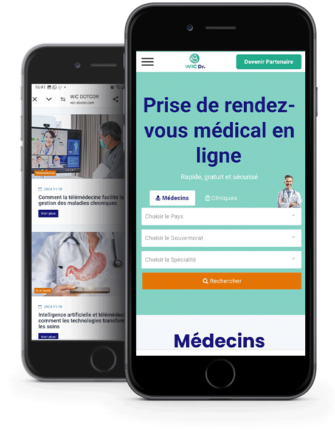

Téléconsultation sécurisée
Des consultations médicales à distance, sécurisées et conformes aux normes internationales, accessibles depuis n'importe quel appareil. Cette fonctionnalité réduit les déplacements et optimise le temps des professionnels.
Aide à la prescription
Grâce à l'intégration de l'intelligence artificielle, les professionnels bénéficient d'une assistance pour prescrire des traitements adaptés, en évitant les interactions médicamenteuses.
Télésecrétariat assisté
Un service dédié à la gestion administrative, permettant de se concentrer sur les soins grâce à l'automatisation des tâches comme la gestion des dossiers et la prise d’appels.